Spectroscopy Curve Fitting
Scott Saunders
09_27_19
library(tidyverse)
library(cowplot)
library(viridis)
library(knitr)
library(kableExtra)
library(modelr)
library(broom)
knitr::opts_chunk$set(tidy.opts=list(width.cutoff=60),tidy=TRUE, echo = TRUE, message=FALSE, warning=FALSE, fig.align="center")
source("../../../IDA/tools/plotting_tools.R")
theme_set(theme_1())Intro
Ok, so we want to fit biexponential decays to the time resolved spectroscopy data from this notebook.
Let’s read in the data:
df <- read_csv("2019_08_29_spectroscopy_RuRh_dphz.csv")
df %>% head() %>% kable(digits = 10) %>% kable_styling()| date | rep | compressed | time | intensity | material | material_id | ruphen_conc | quencher_conc | quencher_eq | quencher_id | comment | run | exp_num | min | bg_sub |
|---|---|---|---|---|---|---|---|---|---|---|---|---|---|---|---|
| 82919 | 10 | compressed.dat | -9.94e-08 | 2.03066e-04 | biofilm | 1 | 5 | 10 | 2 | Rh | NA | 6 | 1 | -0.000607422 | 0.0008104880 |
| 82919 | 10 | compressed.dat | -9.78e-08 | -2.25840e-04 | biofilm | 1 | 5 | 10 | 2 | Rh | NA | 6 | 1 | -0.000726305 | 0.0005004650 |
| 82919 | 10 | compressed.dat | -9.56e-08 | -1.34819e-05 | biofilm | 1 | 5 | 10 | 2 | Rh | NA | 6 | 1 | -0.000760570 | 0.0007470881 |
| 82919 | 10 | compressed.dat | -9.34e-08 | 2.57582e-05 | biofilm | 1 | 5 | 10 | 2 | Rh | NA | 6 | 1 | -0.000511532 | 0.0005372902 |
| 82919 | 10 | compressed.dat | -9.12e-08 | 3.67667e-05 | biofilm | 1 | 5 | 10 | 2 | Rh | NA | 6 | 1 | -0.000476660 | 0.0005134267 |
| 82919 | 10 | compressed.dat | -8.91e-08 | -5.19785e-04 | biofilm | 1 | 5 | 10 | 2 | Rh | NA | 6 | 1 | -0.001029300 | 0.0005095150 |
So we have time vs. intensity data and I have also performed a background subtraction, that simply subtracts the minimum value at each time point within an experiment (e.g. biofilm background or highest quencher value).
The raw data for unquenched Ru look like this:
ggplot(df %>% filter(exp_num == 2 & quencher_eq == 0), aes(x = time,
y = intensity)) + geom_path() + xlim(NA, 5e-07)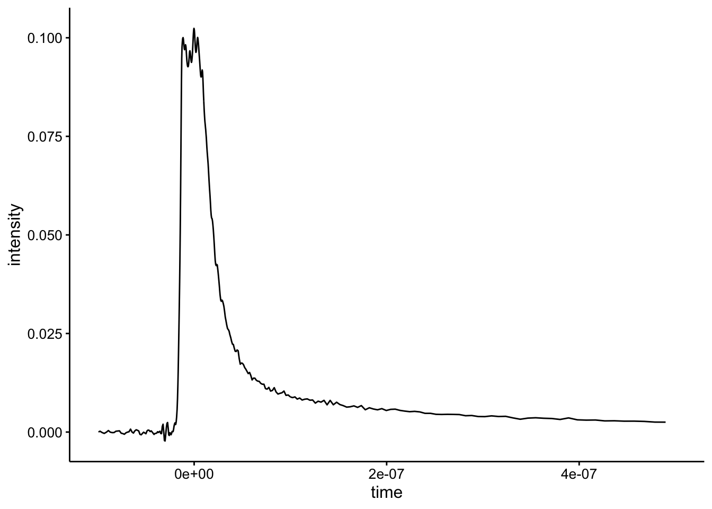
And the background subtraction looks like this:
ggplot(df %>% filter(exp_num == 2 & quencher_eq == 0), aes(x = time,
y = bg_sub)) + geom_path() + xlim(NA, 5e-07)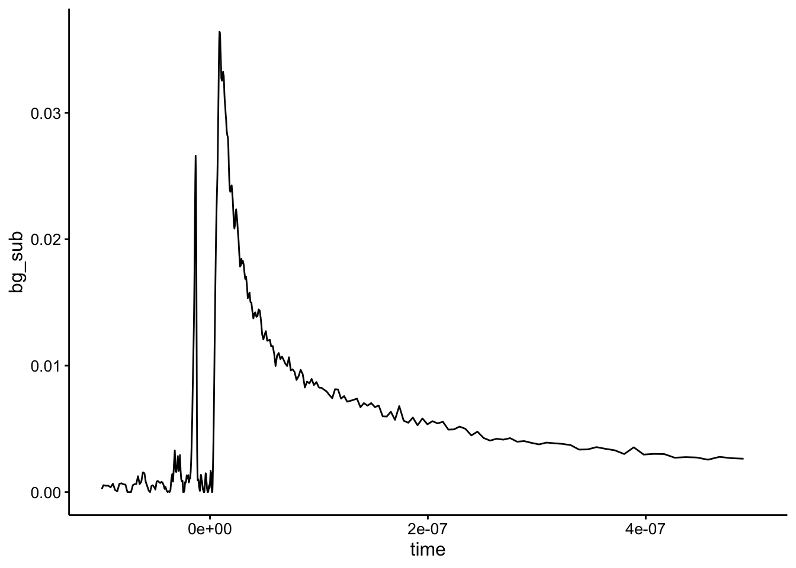
Using SSbiexp for biexponential fitting
Ok, I’m going to use the function SSbiexp with nls to fit these biexponential models. Read the documentation for SSbiexp, but basically it is just going to return values according to this expression: \(A1*exp(-exp(lrc1)*input)+A2*exp(-exp(lrc2)*input)\), where in this case the input will be the time vector. The documentation describes the parameters A1, lrc1, A2 and lrc2 as follows:
A1: a numeric parameter representing the multiplier of the first exponential.
lrc1:a numeric parameter representing the natural logarithm of the rate constant of the first exponential.
A2:a numeric parameter representing the multiplier of the second exponential.
lrc2:a numeric parameter representing the natural logarithm of the rate constant of the second exponential.
Here’s the example given in the documentation if you just give the function a guess for those 4 parameters:
Indo.1 <- Indometh[Indometh$Subject == 1, ]
# ggplot(Indo.1, aes(time, conc)) + geom_point()
# SSbiexp( Indo.1$time, 3, 1, 0.6, -1.3 ) # response only
Indo_2 <- bind_cols(Indo.1, biexp = SSbiexp(Indo.1$time, 3, 1,
0.6, -1.3))
ggplot(Indo_2, aes(x = time)) + geom_path(aes(y = biexp)) + geom_point(aes(y = conc),
shape = 21)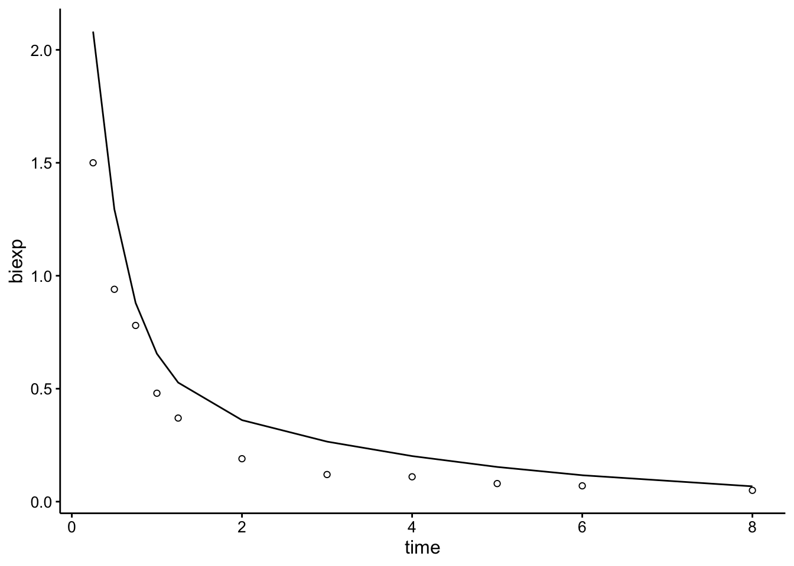
When you actually tell the model to fit, it looks pretty good:
ggplot(Indo_2, aes(x = time, y = conc)) + geom_point(shape = 21) +
geom_smooth(method = "nls", formula = y ~ SSbiexp(x, A1,
lrc1, A2, lrc2), method.args = list(start = c(A1 = 3,
lrc1 = 1, A2 = 0.6, lrc2 = -1.3)), se = F)
# A1 <- 3; lrc1 <- 1; A2 <- 0.6; lrc2 <- -1.3 SSbiexp(
# Indo.1$time, A1, lrc1, A2, lrc2 ) # response and gradient
# print(getInitial(conc ~ SSbiexp(time, A1, lrc1, A2, lrc2),
# data = Indo.1), digits = 5) ## Initial values are in fact
# the converged values fm1 <- nls(conc ~ SSbiexp(time, A1,
# lrc1, A2, lrc2), data = Indo.1) summary(fm1)Background subtracted data
Let’s go ahead and give it a try with the first Ru sample from experiment 2, shown at the beginning.
First pass
So first let’s just guess some parameters that give a curve that’s close to our dataset. After playing around and re-reading what the parameters mean I started using A1 = 0.02; lrc1 = 16.5; A2 = 0.02; lrc2 = 15.7:
df_1 <- df %>% filter(exp_num == 2 & run == 2) %>% filter(time >=
8e-09) %>% filter(bg_sub > 0)
df_guess <- bind_cols(df_1, biexp = SSbiexp(df_1$time, 0.02,
16.5, 0.02, 15.7))
ggplot(df_guess, aes(x = time)) + geom_path(aes(y = biexp)) +
geom_point(aes(y = bg_sub), shape = 21) + geom_hline(yintercept = 0,
linetype = 2, color = "light gray")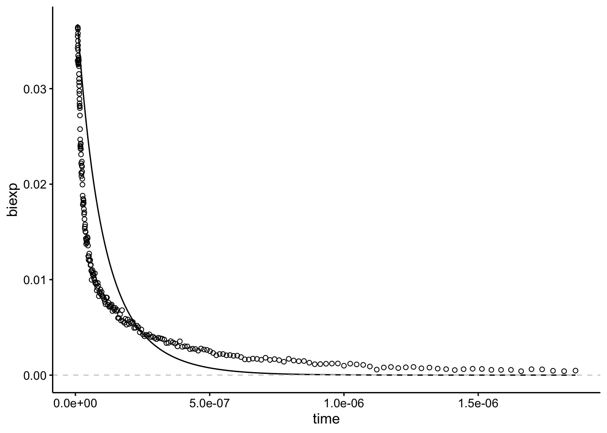
I’m glossing over this, but I actually did a lot of guess and check to get to this point! Importantly the lrc parameters are roughly \(\log(\frac{1}{half-life})\) (FYI that’s a natural log base e…, and half life is in seconds). The A1 and A2 values add up to equal the max height of the data. So A1 = 0.02, A2 = 0.02 gives a height of 0.04.
The other two essential data processing things are that you need to exclude all the data < 0…but just after zero there’s also a rise in signal and we need to exclude that too so that we only observe the decay. That’s why I excluded data < 8 ns. Also, some samples have values that go below zero, which throws an error, so I filtered those out too.
Ok, now we’re ready to fit the model using nonlinear least squares (nls()).
# ggplot(df_1, aes(x = time, y = bg_sub)) + geom_point(shape
# = 21) + geom_smooth(method='nls', formula=y~SSbiexp(x, A1,
# lrc1, A2, lrc2), method.args=list(start=c(A1 = 0.02, lrc1 =
# 16.5, A2 = 0.02, lrc2 = 15.7)), se=F)
A1 = 0.02
lrc1 = 16.5
A2 = 0.02
lrc2 = 15.7
mod_1 <- nls(bg_sub ~ SSbiexp(time, A1, lrc1, A2, lrc2), data = df_1)
summary(mod_1)##
## Formula: bg_sub ~ SSbiexp(time, A1, lrc1, A2, lrc2)
##
## Parameters:
## Estimate Std. Error t value Pr(>|t|)
## A1 4.003e-02 4.397e-04 91.03 <2e-16 ***
## lrc1 1.777e+01 2.110e-02 842.11 <2e-16 ***
## A2 1.077e-02 2.370e-04 45.47 <2e-16 ***
## lrc2 1.493e+01 3.608e-02 413.93 <2e-16 ***
## ---
## Signif. codes: 0 '***' 0.001 '**' 0.01 '*' 0.05 '.' 0.1 ' ' 1
##
## Residual standard error: 0.0006689 on 233 degrees of freedom
##
## Number of iterations to convergence: 0
## Achieved convergence tolerance: 6.319e-07Seems reasonable…idk. Let’s look at the actual fit graphically:
df_mod_1 <- df_1 %>% add_predictions(mod_1)
ggplot(df_mod_1, aes(x = time)) + geom_path(aes(y = pred)) +
geom_point(aes(y = bg_sub), shape = 21)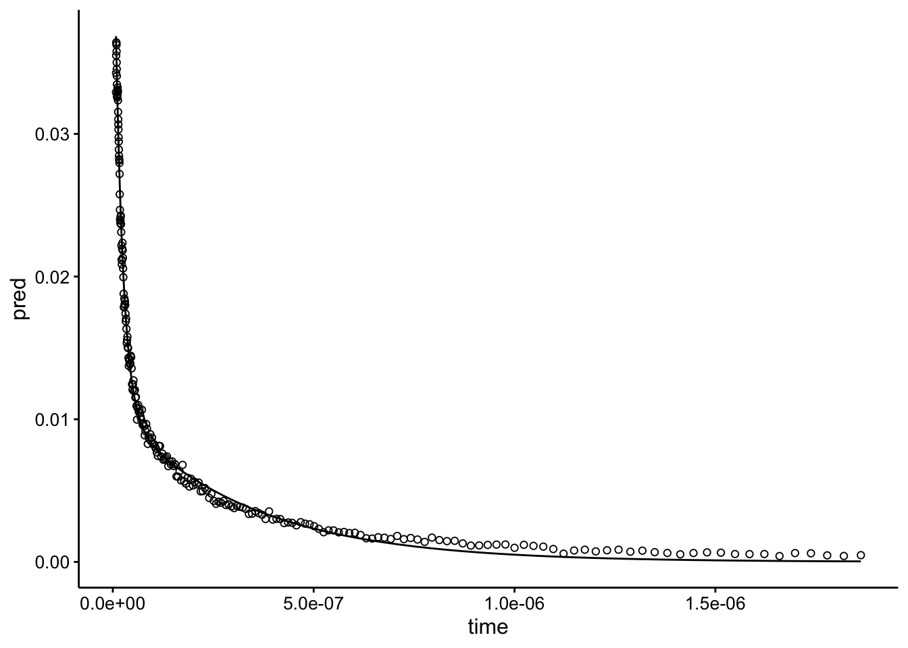
Looks beautiful! Let’s move forward to the whole dataset.
All datasets
Obviously I iterated back and forth between the previous section and this one before it actually worked for the whole thing…that’s how I found out about the negative value issue. Anyway, we’re going to select the subset of the data we’re interested in, which is experiment 2. Notice that again I filter out negative values, times before 8ns, and we are only looking at runs 1 - 9, because 10 is essentially noise in the background subtraction.
I’m using the same parameters shown above.
df_exp_2 <- df %>% filter(exp_num == 2 & run %in% 1:9) %>% filter(time >=
8e-09) %>% filter(bg_sub > 0) %>% group_by(run, quencher_eq) %>%
nest()
fit_biexp_bg_sub <- function(df) {
A1 = 0.02
lrc1 = 16.5
A2 = 0.02
lrc2 = 15.7
mod <- nls(bg_sub ~ SSbiexp(time, A1, lrc1, A2, lrc2), data = df)
mod
}
df_exp_2_models <- df_exp_2 %>% mutate(models = map(data, fit_biexp_bg_sub))
df_exp_2_preds <- df_exp_2_models %>% mutate(preds = map2(data,
models, add_predictions)) %>% unnest(preds)
df_exp_2_ests <- df_exp_2_models %>% mutate(ests = map(models,
tidy, conf.int = T)) %>% unnest(ests)
df_exp_2_preds %>% head()## # A tibble: 6 x 17
## run quencher_eq date rep compressed time intensity material
## <dbl> <dbl> <dbl> <dbl> <chr> <dbl> <dbl> <chr>
## 1 1 NA 82919 13 compresse… 8.01e-9 0.0862 biofilm
## 2 1 NA 82919 13 compresse… 8.21e-9 0.0856 biofilm
## 3 1 NA 82919 13 compresse… 8.41e-9 0.0849 biofilm
## 4 1 NA 82919 13 compresse… 8.71e-9 0.0835 biofilm
## 5 1 NA 82919 13 compresse… 9.01e-9 0.0818 biofilm
## 6 1 NA 82919 13 compresse… 9.21e-9 0.0807 biofilm
## # … with 9 more variables: material_id <dbl>, ruphen_conc <dbl>,
## # quencher_conc <dbl>, quencher_id <chr>, comment <lgl>, exp_num <dbl>,
## # min <dbl>, bg_sub <dbl>, pred <dbl>Ok, we fit all the models individually to the different runs in the experiment and added the predictions from the model (e.g. best fit line), and we also have the parameter estimates:
# write_csv(df_exp_2_ests,
# '2019_09_27_spectroscopy_fits_bg_sub.csv')
df_exp_2_ests %>% kable() %>% kable_styling() %>% scroll_box(height = "400px")| run | quencher_eq | term | estimate | std.error | statistic | p.value | conf.low | conf.high |
|---|---|---|---|---|---|---|---|---|
| 1 | NA | A1 | 0.0529418 | 0.0005468 | 96.825967 | 0.0000000 | 0.0518859 | 0.0540375 |
| 1 | NA | lrc1 | 18.1044596 | 0.0143270 | 1263.656235 | 0.0000000 | 18.0768746 | 18.1357263 |
| 1 | NA | A2 | 0.0004268 | 0.0001342 | 3.181125 | 0.0017623 | 0.0001945 | 0.0009316 |
| 1 | NA | lrc2 | 14.4020610 | 0.7560499 | 19.049089 | 0.0000000 | 11.5026645 | 16.1371897 |
| 2 | 0 | A1 | 0.0400261 | 0.0004397 | 91.031671 | 0.0000000 | 0.0391635 | 0.0409146 |
| 2 | 0 | lrc1 | 17.7714617 | 0.0211034 | 842.113970 | 0.0000000 | 17.7272322 | 17.8162137 |
| 2 | 0 | A2 | 0.0107747 | 0.0002370 | 45.465811 | 0.0000000 | 0.0102673 | 0.0112978 |
| 2 | 0 | lrc2 | 14.9327624 | 0.0360758 | 413.927896 | 0.0000000 | 14.8516493 | 15.0120733 |
| 3 | 1 | A1 | 0.0366979 | 0.0004598 | 79.810446 | 0.0000000 | 0.0358031 | 0.0376265 |
| 3 | 1 | lrc1 | 17.8463798 | 0.0226317 | 788.555369 | 0.0000000 | 17.7997039 | 17.8936321 |
| 3 | 1 | A2 | 0.0084224 | 0.0002189 | 38.476436 | 0.0000000 | 0.0079598 | 0.0089033 |
| 3 | 1 | lrc2 | 14.9581528 | 0.0433736 | 344.867569 | 0.0000000 | 14.8608244 | 15.0530174 |
| 4 | 2 | A1 | 0.0410864 | 0.0003527 | 116.481637 | 0.0000000 | 0.0403968 | 0.0417944 |
| 4 | 2 | lrc1 | 17.8748164 | 0.0154534 | 1156.688822 | 0.0000000 | 17.8431677 | 17.9068948 |
| 4 | 2 | A2 | 0.0071308 | 0.0001699 | 41.977720 | 0.0000000 | 0.0067767 | 0.0074999 |
| 4 | 2 | lrc2 | 15.0412172 | 0.0387262 | 388.399075 | 0.0000000 | 14.9560801 | 15.1246508 |
| 5 | 3 | A1 | 0.0339406 | 0.0003577 | 94.885042 | 0.0000000 | 0.0332465 | 0.0346556 |
| 5 | 3 | lrc1 | 17.8510567 | 0.0194164 | 919.378960 | 0.0000000 | 17.8124659 | 17.8903795 |
| 5 | 3 | A2 | 0.0051298 | 0.0001809 | 28.361836 | 0.0000000 | 0.0047693 | 0.0055136 |
| 5 | 3 | lrc2 | 15.0423467 | 0.0567633 | 265.001351 | 0.0000000 | 14.9220182 | 15.1595736 |
| 6 | 4 | A1 | 0.0330234 | 0.0004179 | 79.015289 | 0.0000000 | 0.0322094 | 0.0338714 |
| 6 | 4 | lrc1 | 17.9107705 | 0.0224171 | 798.978564 | 0.0000000 | 17.8650923 | 17.9578791 |
| 6 | 4 | A2 | 0.0040849 | 0.0001975 | 20.677824 | 0.0000000 | 0.0036857 | 0.0045254 |
| 6 | 4 | lrc2 | 15.1057455 | 0.0774281 | 195.093840 | 0.0000000 | 14.9358376 | 15.2701006 |
| 7 | 6 | A1 | 0.0229344 | 0.0003570 | 64.249858 | 0.0000000 | 0.0222454 | 0.0236620 |
| 7 | 6 | lrc1 | 18.0276467 | 0.0242530 | 743.314737 | 0.0000000 | 17.9778001 | 18.0785537 |
| 7 | 6 | A2 | 0.0031578 | 0.0001285 | 24.579522 | 0.0000000 | 0.0028880 | 0.0034490 |
| 7 | 6 | lrc2 | 15.0756451 | 0.0689669 | 218.592528 | 0.0000000 | 14.9167826 | 15.2284849 |
| 8 | 8 | A1 | 0.0132784 | 0.0004573 | 29.039073 | 0.0000000 | 0.0124071 | 0.0142693 |
| 8 | 8 | lrc1 | 18.0608063 | 0.0504223 | 358.190818 | 0.0000000 | 17.9565175 | 18.1693577 |
| 8 | 8 | A2 | 0.0018043 | 0.0001407 | 12.827057 | 0.0000000 | 0.0015230 | 0.0021289 |
| 8 | 8 | lrc2 | 14.9622327 | 0.1402806 | 106.659335 | 0.0000000 | 14.6468657 | 15.2594812 |
| 9 | 10 | A1 | 0.0126725 | 0.0003643 | 34.782780 | 0.0000000 | 0.0119632 | 0.0134666 |
| 9 | 10 | lrc1 | 18.0495282 | 0.0406554 | 443.964203 | 0.0000000 | 17.9631129 | 18.1412096 |
| 9 | 10 | A2 | 0.0010523 | 0.0000991 | 10.621978 | 0.0000000 | 0.0008494 | 0.0013024 |
| 9 | 10 | lrc2 | 14.7366645 | 0.1862022 | 79.143362 | 0.0000000 | 14.2781979 | 15.1557167 |
Let’s see how the fits look:
ggplot(df_exp_2_preds, aes(x = time, group = run, color = quencher_eq)) +
geom_path(aes(y = pred), color = "black") + geom_point(aes(y = bg_sub),
alpha = 0.2, shape = 21) + xlim(0, 5e-07) + facet_wrap(~quencher_eq)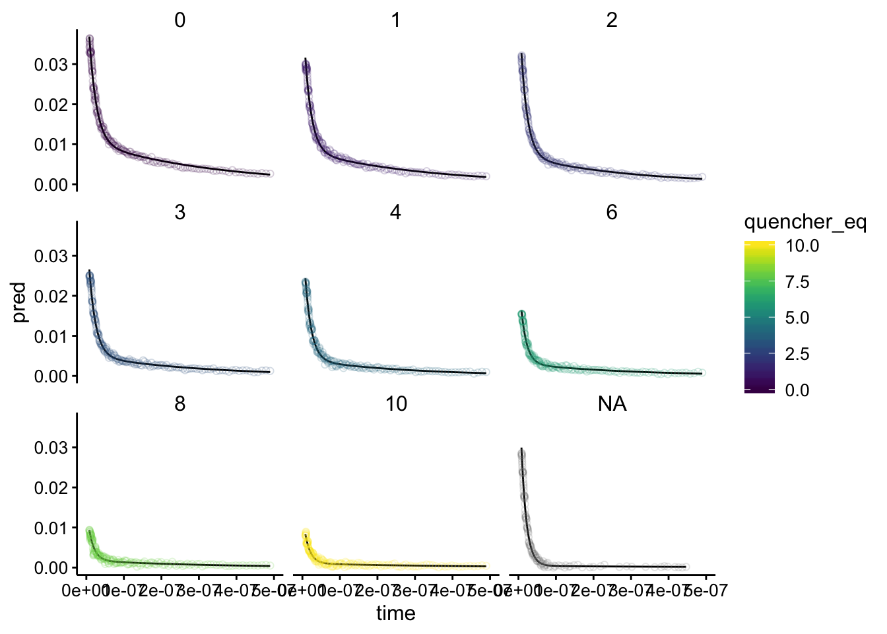
Nice! All of the fits seem totally reasonable. Note that the plot with quencher eq as NA is the biofilm only background. Overlaying them, we can see the same pattern as before:
ggplot(df_exp_2_preds, aes(x = time, group = run, color = quencher_eq)) +
geom_path(aes(y = pred)) + geom_point(aes(y = bg_sub), alpha = 0.2,
shape = 21) + xlim(0, 5e-07)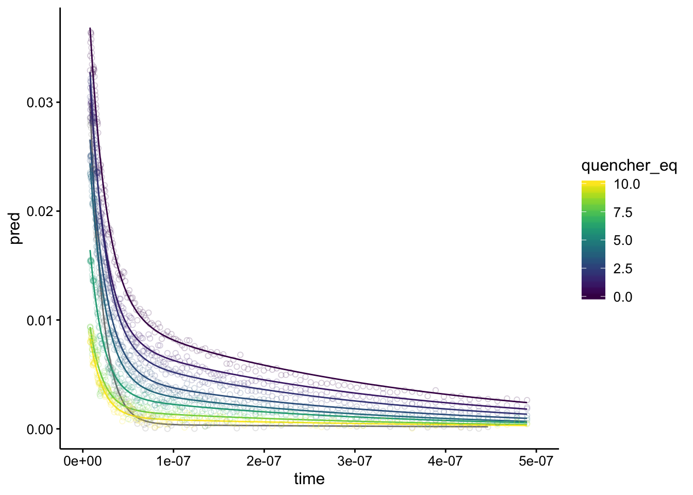 Notice the curves don’t overlap at all, except the gray one, which is the biofilm background.
Now, let’s look at the actual parameter estimates:
background_ests <- df_exp_2_ests %>% filter(is.na(quencher_eq))
# background_ests
ggplot(df_exp_2_ests, aes(x = quencher_eq, y = estimate)) + geom_hline(data = background_ests,
aes(yintercept = estimate), linetype = 2, color = "light gray") +
geom_pointrange(aes(ymin = conf.low, ymax = conf.high)) +
facet_wrap(~term, scales = "free")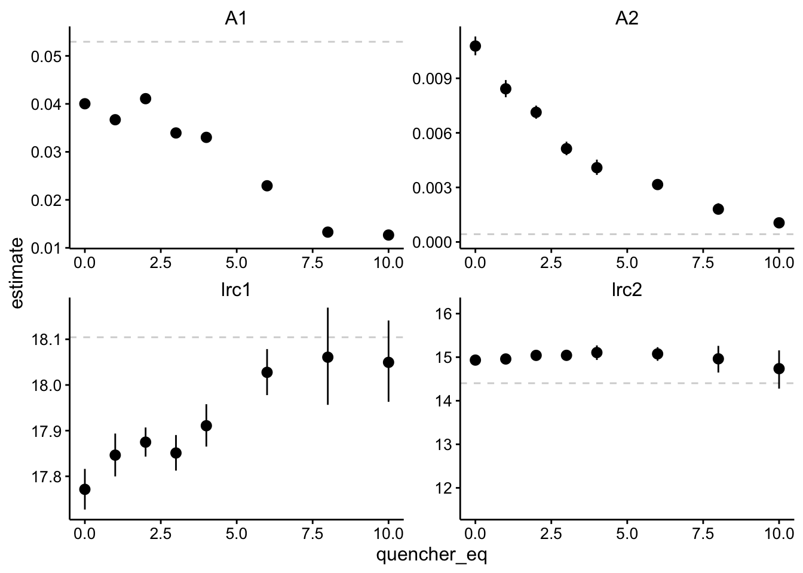
Note that the dotted lines are the values for the biofilm only control.
Ok, so let’s break this down. To me this means that there are two components of different magnitudes - A1 is about 4 times larger than A2. The component described by A1 decays pretty fast with a half life of ~ 20 ns, and the the A2 signal decays much more slowly with a half life of ~ 150ns. You can see that the magnitudes of both A1 and A2 go down significantly as we add more quencher (note bars are 95% CI). Meanwhile, the rate constants do not really change significantly. There seem to be some statistically significant differences, but we’re talking about tiny effect sizes. Let’s see the stern volmer plot, but I think this supports what we originally thought - quenching seems to occur statically.
Just for fun let’s replot the fit data with those estimates of the lifetimes.
ggplot(df_exp_2_preds, aes(x = time, group = run, color = quencher_eq)) +
geom_vline(xintercept = c(2e-08, 1.5e-07), color = "light gray",
size = 2) + geom_path(aes(y = pred)) + xlim(0, 5e-07)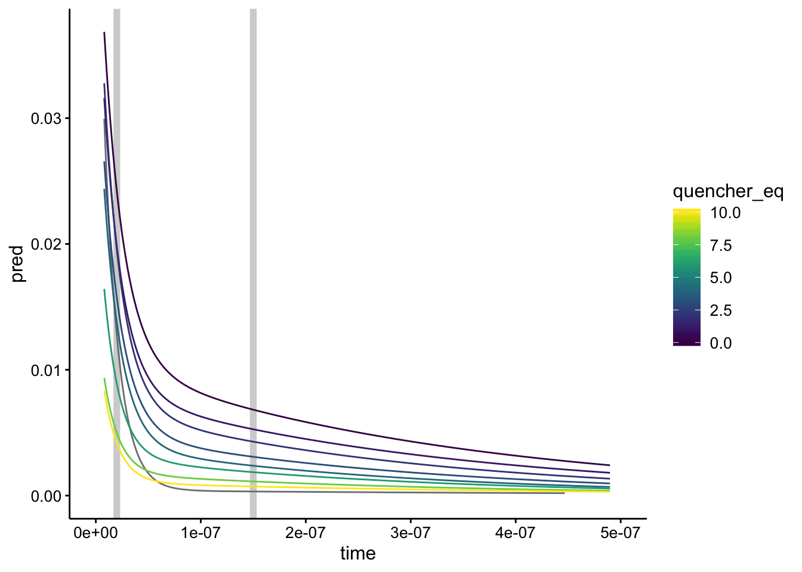
Seems reasonable!
Raw data
Now let’s do it with the raw data, since the background subtraction is a little weird, since it’s not from the biofilm only background.
First pass
let’s guess and check first:
df_raw <- df %>% filter(exp_num == 2 & quencher_eq == 0) %>%
filter(time >= 8e-09)
df_raw_guess <- bind_cols(df_raw, biexp = SSbiexp(df_raw$time,
0.02, 16.5, 0.02, 15.7))
ggplot(df_raw_guess, aes(x = time)) + geom_path(aes(y = biexp)) +
geom_point(aes(y = intensity), shape = 21)This is actually the same guess we used above…it looks pretty bad, but right order of magnitude. Let’s see what happens when we fit and plot:
# ggplot(df_raw, aes(x = time, y = intensity)) +
# geom_point(shape = 21) + geom_smooth(method='nls',
# formula=y~SSbiexp(x, A1, lrc1, A2, lrc2),
# method.args=list(start=c(A1 = 0.05, lrc1 = 16.5, A2 = 0.05,
# lrc2 = 15.7)), se=F)
A1 = 0.02
lrc1 = 16.5
A2 = 0.02
lrc2 = 15.7
mod_raw_1 <- nls(intensity ~ SSbiexp(time, A1, lrc1, A2, lrc2),
data = df_raw)
df_mod_raw_1 <- df_raw %>% add_predictions(mod_raw_1)
ggplot(df_mod_raw_1, aes(x = time)) + geom_path(aes(y = pred)) +
geom_point(aes(y = intensity), shape = 21)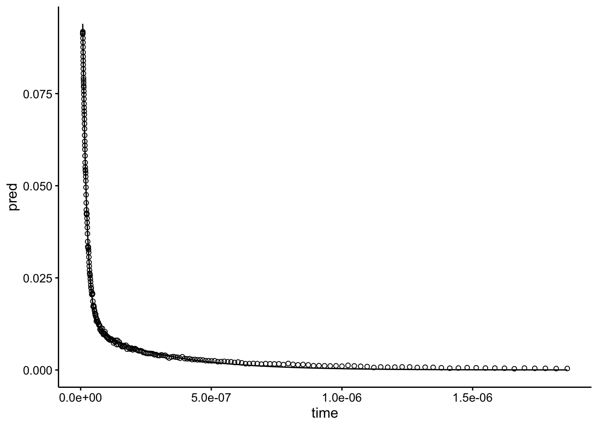
Looks perfect. This little exercise demonstrates how robust this fitting process is. Even with a bad guess, the model rapidly converges to what looks like a right answer. We really just need to give it starting parameters that are in the right order of magnitude.
All datasets
This time we’ll be able to fit all the datasets (runs 1 - 10), because they all have a decay dominated by the biofilm background.
df_exp_2_raw <- df %>% filter(exp_num == 2 & run %in% 1:10) %>%
filter(time >= 8e-09) %>% filter(intensity > 0) %>% group_by(run,
quencher_eq) %>% nest()
fit_biexp_raw <- function(df) {
A1 = 0.02
lrc1 = 16.5
A2 = 0.02
lrc2 = 15.7
mod <- nls(intensity ~ SSbiexp(time, A1, lrc1, A2, lrc2),
data = df)
mod
}
df_exp_2_raw_models <- df_exp_2_raw %>% mutate(models = map(data,
fit_biexp_raw))
df_exp_2_raw_preds <- df_exp_2_raw_models %>% mutate(preds = map2(data,
models, add_predictions)) %>% unnest(preds)
df_exp_2_raw_ests <- df_exp_2_raw_models %>% mutate(ests = map(models,
tidy, conf.int = T)) %>% unnest(ests)
df_exp_2_raw_preds %>% head()## # A tibble: 6 x 17
## run quencher_eq date rep compressed time intensity material
## <dbl> <dbl> <dbl> <dbl> <chr> <dbl> <dbl> <chr>
## 1 1 NA 82919 13 compresse… 8.01e-9 0.0862 biofilm
## 2 1 NA 82919 13 compresse… 8.21e-9 0.0856 biofilm
## 3 1 NA 82919 13 compresse… 8.41e-9 0.0849 biofilm
## 4 1 NA 82919 13 compresse… 8.71e-9 0.0835 biofilm
## 5 1 NA 82919 13 compresse… 9.01e-9 0.0818 biofilm
## 6 1 NA 82919 13 compresse… 9.21e-9 0.0807 biofilm
## # … with 9 more variables: material_id <dbl>, ruphen_conc <dbl>,
## # quencher_conc <dbl>, quencher_id <chr>, comment <lgl>, exp_num <dbl>,
## # min <dbl>, bg_sub <dbl>, pred <dbl>Again we have predictions for our best fit line. And below we have our parameter estimates:
# write_csv(df_exp_2_raw_ests,
# '2019_09_27_spectroscopy_fits_raw.csv')
df_exp_2_raw_ests %>% kable() %>% kable_styling() %>% scroll_box(height = "400px")| run | quencher_eq | term | estimate | std.error | statistic | p.value | conf.low | conf.high |
|---|---|---|---|---|---|---|---|---|
| 1 | NA | A1 | 0.1468144 | 0.0006551 | 224.108098 | 0e+00 | 0.1449057 | 0.1480211 |
| 1 | NA | lrc1 | 18.0810305 | 0.0092471 | 1955.308954 | 0e+00 | 18.0626581 | 18.1039585 |
| 1 | NA | A2 | 0.0048439 | 0.0008914 | 5.434276 | 2e-07 | 0.0032399 | 0.0075171 |
| 1 | NA | lrc2 | 16.5384017 | 0.1364982 | 121.162028 | 0e+00 | 16.2014458 | 16.8342847 |
| 2 | 0 | A1 | 0.1342800 | 0.0006149 | 218.379507 | 0e+00 | 0.1330682 | 0.1355106 |
| 2 | 0 | lrc1 | 17.9469522 | 0.0077857 | 2305.105563 | 0e+00 | 17.9307481 | 17.9633875 |
| 2 | 0 | A2 | 0.0127608 | 0.0002661 | 47.951782 | 0e+00 | 0.0121920 | 0.0133575 |
| 2 | 0 | lrc2 | 15.0913067 | 0.0340724 | 442.919429 | 0e+00 | 15.0139163 | 15.1676206 |
| 3 | 1 | A1 | 0.1314190 | 0.0005346 | 245.845415 | 0e+00 | 0.1303672 | 0.1324855 |
| 3 | 1 | lrc1 | 17.9739756 | 0.0068233 | 2634.219250 | 0e+00 | 17.9598287 | 17.9883387 |
| 3 | 1 | A2 | 0.0102951 | 0.0002275 | 45.246272 | 0e+00 | 0.0098094 | 0.0108070 |
| 3 | 1 | lrc2 | 15.1395119 | 0.0356979 | 424.100976 | 0e+00 | 15.0581469 | 15.2196930 |
| 4 | 2 | A1 | 0.1359159 | 0.0004545 | 299.026882 | 0e+00 | 0.1350203 | 0.1368218 |
| 4 | 2 | lrc1 | 17.9807048 | 0.0057571 | 3123.214242 | 0e+00 | 17.9687671 | 17.9928478 |
| 4 | 2 | A2 | 0.0090851 | 0.0002093 | 43.409062 | 0e+00 | 0.0086407 | 0.0095556 |
| 4 | 2 | lrc2 | 15.2458465 | 0.0355123 | 429.311457 | 0e+00 | 15.1655674 | 15.3250299 |
| 5 | 3 | A1 | 0.1286256 | 0.0004449 | 289.081763 | 0e+00 | 0.1277509 | 0.1295104 |
| 5 | 3 | lrc1 | 17.9786699 | 0.0060757 | 2959.112628 | 0e+00 | 17.9662255 | 17.9914043 |
| 5 | 3 | A2 | 0.0070688 | 0.0002163 | 32.682992 | 0e+00 | 0.0066202 | 0.0075535 |
| 5 | 3 | lrc2 | 15.3000852 | 0.0459199 | 333.190723 | 0e+00 | 15.1979559 | 15.4006523 |
| 6 | 4 | A1 | 0.1280492 | 0.0004823 | 265.486385 | 0e+00 | 0.1270989 | 0.1290115 |
| 6 | 4 | lrc1 | 18.0013884 | 0.0067691 | 2659.343721 | 0e+00 | 17.9872242 | 18.0160902 |
| 6 | 4 | A2 | 0.0062080 | 0.0002539 | 24.450288 | 0e+00 | 0.0056701 | 0.0068115 |
| 6 | 4 | lrc2 | 15.4357056 | 0.0579343 | 266.434605 | 0e+00 | 15.3010686 | 15.5678980 |
| 7 | 6 | A1 | 0.1181738 | 0.0004494 | 262.936850 | 0e+00 | 0.1172898 | 0.1190694 |
| 7 | 6 | lrc1 | 18.0349255 | 0.0067435 | 2674.431343 | 0e+00 | 18.0206760 | 18.0497611 |
| 7 | 6 | A2 | 0.0053374 | 0.0002338 | 22.828071 | 0e+00 | 0.0048325 | 0.0059091 |
| 7 | 6 | lrc2 | 15.5005976 | 0.0608957 | 254.543204 | 0e+00 | 15.3542450 | 15.6430833 |
| 8 | 8 | A1 | 0.1084866 | 0.0004202 | 258.203119 | 0e+00 | 0.1076584 | 0.1093257 |
| 8 | 8 | lrc1 | 18.0401978 | 0.0071271 | 2531.205334 | 0e+00 | 18.0247775 | 18.0567964 |
| 8 | 8 | A2 | 0.0040293 | 0.0002423 | 16.626086 | 0e+00 | 0.0034981 | 0.0046809 |
| 8 | 8 | lrc2 | 15.6107065 | 0.0790806 | 197.402501 | 0e+00 | 15.4109460 | 15.8069294 |
| 9 | 10 | A1 | 0.1078571 | 0.0005191 | 207.789045 | 0e+00 | 0.1068281 | 0.1088943 |
| 9 | 10 | lrc1 | 18.0442591 | 0.0095276 | 1893.891206 | 0e+00 | 18.0232070 | 18.0689057 |
| 9 | 10 | A2 | 0.0035480 | 0.0003648 | 9.726519 | 0e+00 | 0.0027558 | 0.0047194 |
| 9 | 10 | lrc2 | 15.7947334 | 0.1221910 | 129.262618 | 0e+00 | 15.4599489 | 16.1188731 |
| 10 | 12 | A1 | 0.0955924 | 0.0004248 | 225.005663 | 0e+00 | 0.0946409 | 0.0964409 |
| 10 | 12 | lrc1 | 18.0499135 | 0.0097507 | 1851.143065 | 0e+00 | 18.0286172 | 18.0770972 |
| 10 | 12 | A2 | 0.0026793 | 0.0004040 | 6.632287 | 0e+00 | 0.0018486 | 0.0041495 |
| 10 | 12 | lrc2 | 16.0580153 | 0.1531375 | 104.860108 | 0e+00 | 15.6236545 | 16.4630929 |
Let’s take a look:
ggplot(df_exp_2_raw_preds, aes(x = time, group = run, color = quencher_eq)) +
geom_path(aes(y = pred), color = "black") + geom_point(aes(y = intensity),
alpha = 0.2, shape = 21) + xlim(0, 5e-07) + facet_wrap(~quencher_eq)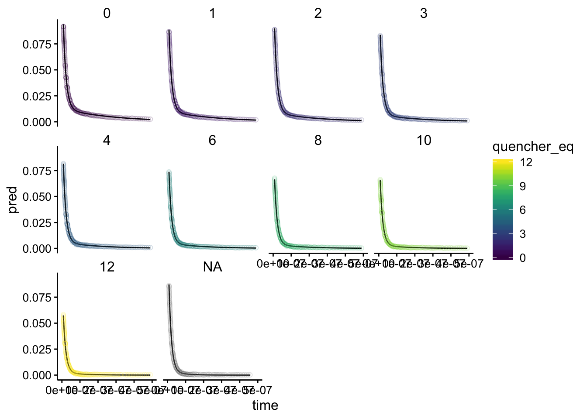
Looks perfect! Overlaying gives:
ggplot(df_exp_2_raw_preds, aes(x = time, group = run, color = quencher_eq)) +
geom_path(aes(y = pred)) + geom_point(aes(y = intensity),
alpha = 0.2, shape = 21) + xlim(0, 5e-07)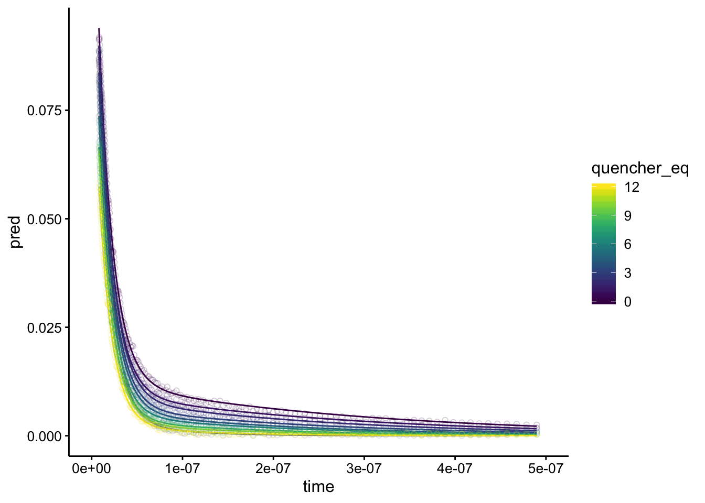
Ok, now let’s see what the actual parameter estimates are:
background_ests <- df_exp_2_raw_ests %>% filter(is.na(quencher_eq))
# background_ests
ggplot(df_exp_2_raw_ests, aes(x = quencher_eq, y = estimate)) +
geom_hline(data = background_ests, aes(yintercept = estimate),
linetype = 1, color = "light gray") + geom_hline(data = background_ests,
aes(yintercept = conf.low), linetype = 2, color = "light gray") +
geom_hline(data = background_ests, aes(yintercept = conf.high),
linetype = 2, color = "light gray") + geom_pointrange(aes(ymin = conf.low,
ymax = conf.high)) + facet_wrap(~term, scales = "free")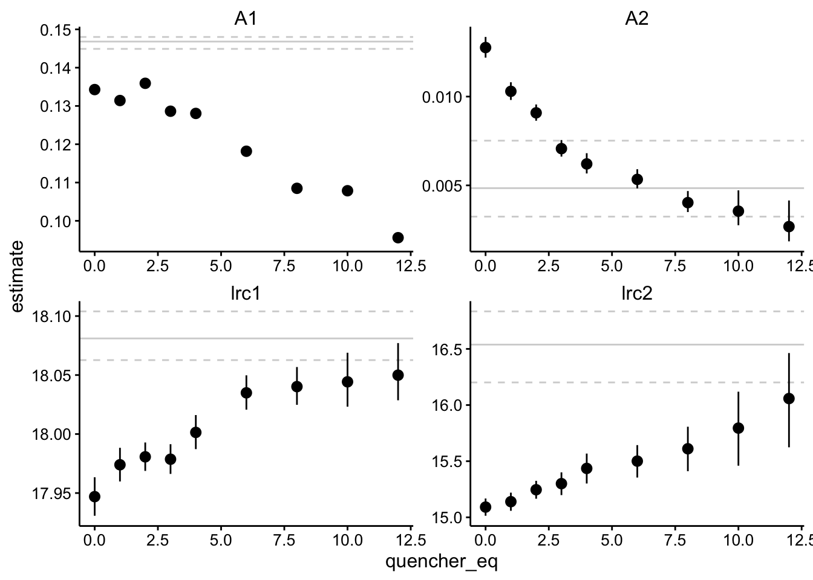
Let’s walk through it. Again, there are two components of different magnitude - A1 is about 10x larger than A2. A1 has a half life of about 15ns, and A2 has a half life of ~ 250ns, but there’s quite a bit of variation. A1 is probably the biofilm background signal, and interestingly it’s amplitude decreases significantly (~30%), while it’s lifetime barely changes. The A2 component may be the Ru signal - It’s amplitude decreases a lot (~80%), but there’s also a significant change in lifetime from about 250ns (lrc2 = 15) to about 100ns (lrc2 = 16). I’m not exactly sure what to make of this. I would say that the amplitude decrease is larger and more confident than the lifetime changes, but it may be consistent with a combination of static and dynammic quenching.
ggplot(df_exp_2_raw_preds, aes(x = time, group = run, color = quencher_eq)) +
geom_vline(xintercept = 1.5e-08, color = "light gray", size = 2) +
geom_rect(aes(xmin = 1e-07, xmax = 2.5e-07, ymin = 0, ymax = Inf),
fill = "light gray", color = NA) + geom_path(aes(y = pred)) +
xlim(0, 5e-07)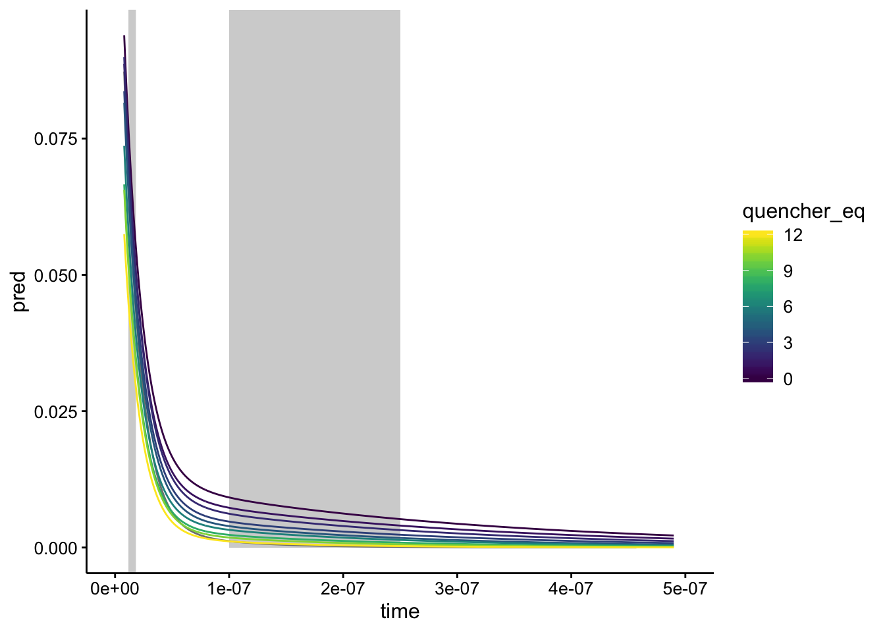
Yeah, when we visualize it like this it looks like there’s a pretty big range in that second lifetime…
Conclusions
- It may be interesting to run this analysis for all of the datasets in the other notebook…it’s always nice to have numbers.
- We should convert the lrc’s into parameters we actually understand
- Let’s see if Nirit can use this information to get stern volmer plots.
sessionInfo()## R version 3.5.2 (2018-12-20)
## Platform: x86_64-apple-darwin15.6.0 (64-bit)
## Running under: macOS Mojave 10.14.6
##
## Matrix products: default
## BLAS: /Library/Frameworks/R.framework/Versions/3.5/Resources/lib/libRblas.0.dylib
## LAPACK: /Library/Frameworks/R.framework/Versions/3.5/Resources/lib/libRlapack.dylib
##
## locale:
## [1] en_US.UTF-8/en_US.UTF-8/en_US.UTF-8/C/en_US.UTF-8/en_US.UTF-8
##
## attached base packages:
## [1] stats graphics grDevices utils datasets methods base
##
## other attached packages:
## [1] broom_0.5.1 modelr_0.1.2 kableExtra_1.0.1
## [4] knitr_1.23 viridis_0.5.1 viridisLite_0.3.0
## [7] cowplot_0.9.4 forcats_0.3.0 stringr_1.3.1
## [10] dplyr_0.8.1 purrr_0.2.5 readr_1.3.1
## [13] tidyr_0.8.2 tibble_2.1.3 ggplot2_3.2.0
## [16] tidyverse_1.2.1
##
## loaded via a namespace (and not attached):
## [1] tidyselect_0.2.5 xfun_0.7 haven_2.0.0 lattice_0.20-38
## [5] colorspace_1.4-0 generics_0.0.2 htmltools_0.3.6 yaml_2.2.0
## [9] utf8_1.1.4 rlang_0.3.4 pillar_1.3.1 glue_1.3.1
## [13] withr_2.1.2 readxl_1.2.0 munsell_0.5.0 gtable_0.2.0
## [17] cellranger_1.1.0 rvest_0.3.2 evaluate_0.14 labeling_0.3
## [21] fansi_0.4.0 highr_0.7 Rcpp_1.0.1 scales_1.0.0
## [25] backports_1.1.3 formatR_1.5 webshot_0.5.1 jsonlite_1.6
## [29] gridExtra_2.3 hms_0.4.2 digest_0.6.18 stringi_1.2.4
## [33] grid_3.5.2 cli_1.0.1 tools_3.5.2 magrittr_1.5
## [37] lazyeval_0.2.1 crayon_1.3.4 pkgconfig_2.0.2 MASS_7.3-51.1
## [41] xml2_1.2.0 lubridate_1.7.4 assertthat_0.2.1 rmarkdown_1.13
## [45] httr_1.4.0 rstudioapi_0.9.0 R6_2.4.0 nlme_3.1-140
## [49] compiler_3.5.2